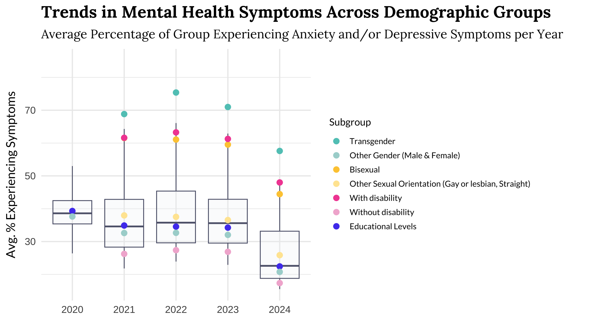

Demographic Disparities in Mental Health During the COVID-19 Pandemic
Different groups had significant disparities in mental health experiences.

- Crucial Data Addition in 2021: Before 2021, the Household Pulse Survey lacked questions on sexual orientation, gender identity, and disability status, missing key data. Post-2021, individuals identifying as transgender, bisexual, or having a disability reported higher rates of anxiety and depression.
- Key Insights: Including these demographics revealed significant disparities in mental health impacts across different groups during the pandemic.
- Contextual Understanding: The pandemic emphasized nuclear families, which adversely affected transgender individuals lacking stable family structures (Mitchell et al., 2022). Social isolation also heightened anxiety and depression, especially for those relying on “chosen family” (Jackson Levin et al., 2020).
➔
➔